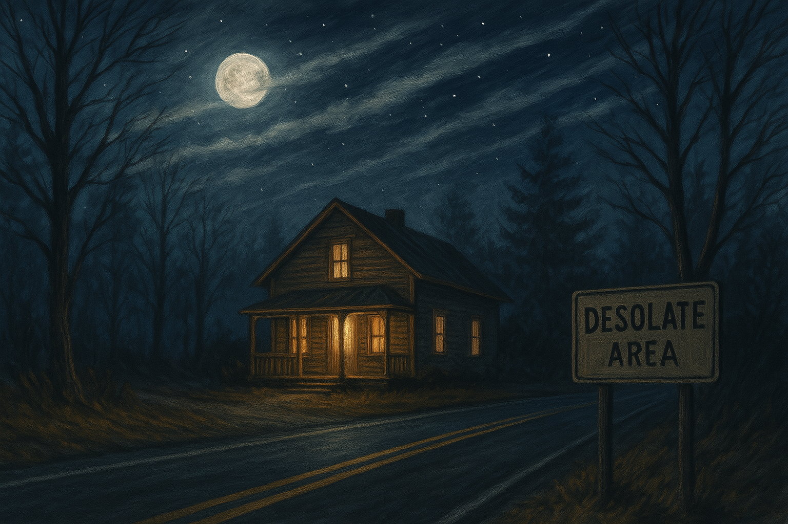

🌫️ Parte 1: La tarde gris

Era una tarde de invierno nublada, de esas que parecen dibujadas en sepia. El viento sacudía los árboles de la calle como si quisieran hablar, y la luna apenas se asomaba entre nubes grises. En la ciudad de Winston-Salem, un chico llamado Bobby, de 18 años, caminaba con la mirada baja. Llevaba consigo un secreto que lo quemaba por dentro, uno que no podía compartir, ni siquiera con su mejor amigo.
Ese día, Bobby fue a visitar a su padre, Mark, un albañil humilde y alcohólico. Desde que su madre murió, la casa era un refugio roto. Mark le preparó algo de comer: un huevo frito y una hamburguesa casi cruda. Discutieron. Bobby, cansado, se fue sin decir mucho. Tenía una invitación: una fiesta en la casa de madera de un amigo.
🏠 Parte 2: La casa de madera
La casa quedaba al borde del bosque. Era clásica, de madera, con luces tenues y un columpio que se movía con el viento. Al llegar, Bobby fue recibido por su amigo Charly, que lo esperaba con una sonrisa.
La fiesta nunca sucedió. Algunos no llegaron, otros cancelaron. Quedaron solo ellos dos y dos chicas: Vanesa y Camila. Se quedaron igual, hablaron, rieron, tomaron algo. Bobby se sintió contenido por primera vez. Quiso hablar, contar que era gay. Pero no se animó.
❄️ Parte 3: La verdad de Bobby
Días después, Bobby se animó y le contó todo a Charly. Para su sorpresa, fue escuchado, no juzgado. Charly lo abrazó con sinceridad.
Pero no todo fue como en las películas. Bobby se hizo unos estudios médicos. El resultado: positivo para VIH. El mundo se le cayó. Se aisló. No volvió a hablar con nadie más.
Unos meses después, Bobby falleció. En soledad. Dejó una carta para Charly, agradeciéndole por haber sido su único refugio real. La dejó en la casa de madera, donde esa noche se sintió vivo.
🖤 Epílogo
Años después, la casa de madera sigue en pie. Algunos dicen que, en noches de viento, se escucha música baja desde dentro, como si Bobby reviviera esa noche sin miedo a ser quien era.